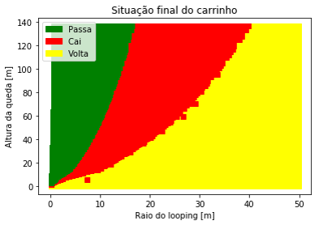

Modelagem e Simulação do Mundo Físico - Professor Fábio H.
Amada por uns e temida por outros, a montanha russa é uma atração muito comum em parques de diversões. No projeto, admitiu-se uma a qual sua trajeória é no início uma queda e depois um looping. Como simplificação, admitiu-se a queda como uma reta e o looping como uma circunferência. A paritir disso, decidiu-se analisar o efeito da variação tanto da altura da queda quanto do raio do looping, verificando que quanto maior o raio do looping, maior a altura de queda necessária para que o carrinho complete o looping.
O avião é um dos meios de transporte mais utilizados nos dias de hoje, principalmente para o deslocamento de pessoas e de carga, com rapidez. Nesse projeto, buscamos entender qual a influência da massa total de um Boeing 737 em sua decolagem, simulando-a em várias condições, partindo do vazio ao sobrepeso.
Ler mais